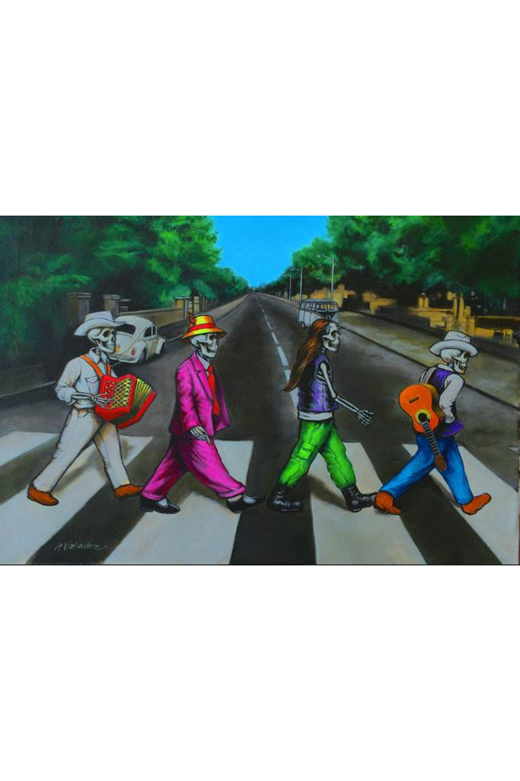
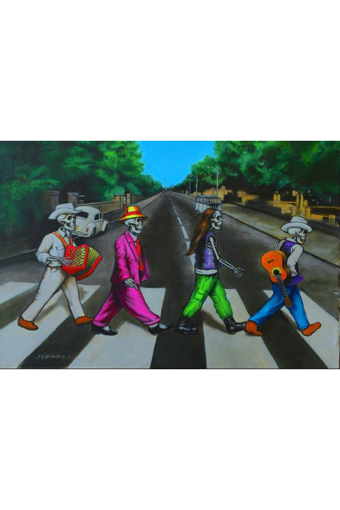
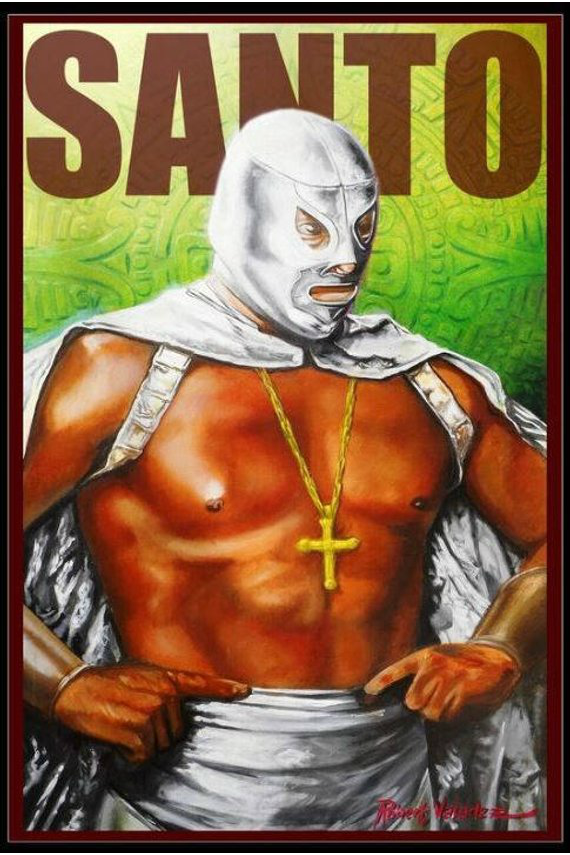
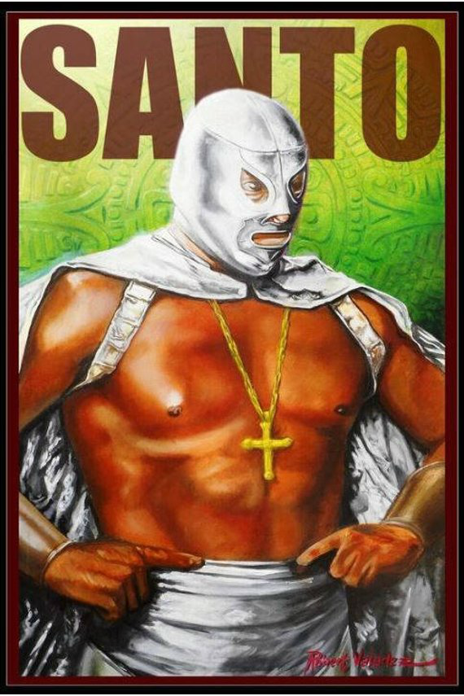

 

Robert Valadez was born and raised in Chicago’s largely Mexican Pilsen community. He began painting while attending Benito Juarez High School and participated in the painting of the school’s mural entitled “Esperanza”, created by Jaime Longoria and Malu Ortega Y Alberro in 1979. He studied at the School of the Art Institute of Chicago and the American Academy of Art and during the 80’s he became part of Pilsen’s vibrant mural movement. A former artist-in-residence at Casa Aztlan Cultural Center, Robert also has a significant body of personal artwork, much of it focusing on his bi-cultural identity. He has exhibited work in various group and solo exhibitions in addition to shows at the National Museum of Mexican Art where he has artwork in the permanent collection. He also is an accomplished muralist, having been commissioned by the city of Sterling Illinois and the City of Muskegon Michigan for large public works, and has received numerous other commissions, including a suite of paintings for the chapel altar at Cristo Rey Jesuit High School, a painting of the Virgen de Guadalupe for The Claretians, the Shrine of St. Jude (A Catholic order), as well as commercial work for Nescafe Coffee, Miller Light & Chivas de Guadalajara Soccer team, among many others.